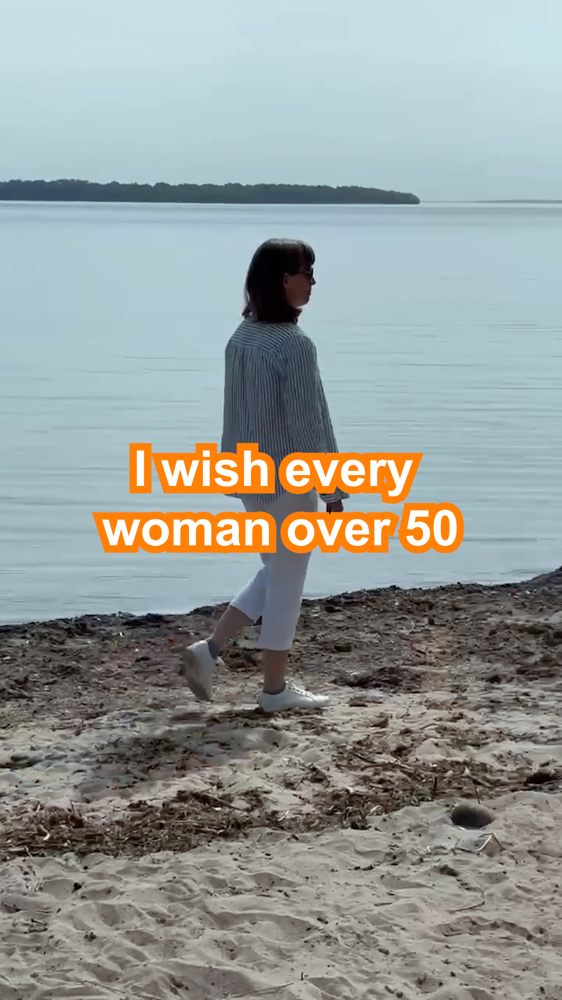
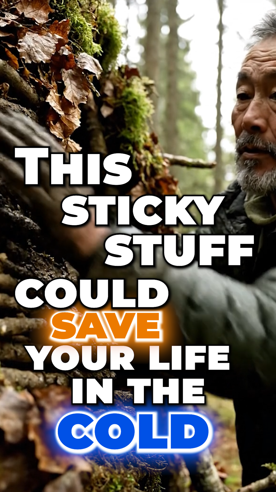

Health Educational Video 01
Educational health content edited with clean pacing, captions, visual enhancements, and supporting footage.
Watch VideoVideo Editing
A selection of health and survival video editing projects featuring clean cuts, captions, B-roll, music, transitions, pacing, and visual storytelling.
Explore the work01 / Selected Work
Clear, engaging edits that make educational health information easy to follow and visually compelling.
Educational health content edited with clean pacing, captions, visual enhancements, and supporting footage.
Watch Video
Health-focused video editing featuring captions, organized storytelling, music, and engaging visual elements.
Watch Video
A polished health video edit using clear cuts, readable captions, B-roll, and smooth transitions.
Watch Video02 / Selected Work
Purposeful visual storytelling that keeps practical preparedness content informative, paced, and engaging.

Survival preparedness content edited with informative captions, B-roll, sound, and strong pacing.
Watch Video
Educational survival content featuring clean storytelling, text overlays, transitions, and supporting visuals.
Watch Video
A survival-themed video edit using captions, engaging pacing, B-roll, music, and visual enhancements.
Watch VideoNeed a thoughtful editor for your next project?
Back to Portfolio